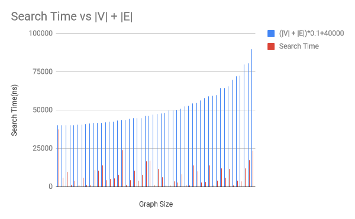

Example Class 4 Report (Project 4B)
Data
The data set of cities used for this lab is taken from a GitHub repository
Graph Implementation
In our implementation, we used adjacency lists to represent the graph (undirected, non-weighted). The Graph class holds all the functions to create and modify the graph, which are used by the Graph Generation class.
Methods:
- connect: Creates an undirected edge between 2 cities.
-
density: 2 * (number of non-stop flights (undirected graph)) / (size of the adjacency list)
- num of non-stop flights = density * maximum possible number of non-stop flights
- maximum possible number of non-stop flights = size * (size-1) / 2
- printGraph - Although the Graph is implemented as an adjacency list, we printed the graph out as an adjacency matrix allows us to easily see which cities are connected.
Graph Generation Implementation
In this implementation, we will be using size, density and number of non-stop flight to generate random graph by randomly generating linked list to each city.
Methods:
-
buildNonStopFlights: Edges are built on top of pre-existing graph.
- only cities that are not connected are selected
- selection of cities is done using an adjacency matrix - search time of O(1)
Implementation of Searching Algorithms
Our searching algorithms are implemented in the Searcher class.
-
the Searcher class make use of a linked list, L
- L is used as a queue in BFS
- L is used as a stack in DFS
Both BFS and DFS have the same code structure; they:
- visit the source
- place the source in L
-
while L is not empty (ie graph is not fully traversed)
- remove the first City in L
- visit the first City’s neighbouring Cities if they are not already visited
- add the neighbouring Cities to L
Differences in BFS and DFS
-
upon visiting a neighbouring City which is the destination
- BFS: return path to destination as the shortest route
- DFS: compare new path found to previously known shortest route - if the newly-found path is shorter than the current shortest route, or there is no shortest route currently, the new path found is stored as the shortest route
-
for adding of neighbouring Cities to L
- BFS: add neighbouring Cities to back of L (i.e. L is used as a queue)
- DFS: if neighbouring Cities are already in L, remove them from L first; add neighbouring Cities to front of L (i.e. L is used as a stack)
-
at the end of the function
- BFS: returns null since no path can be found
- DFS: returns the shortest route, or null if no path can be found
Analysis of Running Times
Based on number of cities (size of graph/ |V|) and number of non-stop flights (|E|):
Based on the graph, search time = O(0.1 (|V| +|E|) + 40000) = O(|V|+|E|).
Conclusion
DFS cannot be used in place of BFS as it does not guarantee that a node which is visited before another node is closer to the source node. This is also reflected in the backtracking nature of DFS in which it visits the “deeper” nodes further away from the source nodes first; going as far as it possibly can before returning to the unvisited adjacent nodes.
On the other hand, BFS visits nodes in increasing order of distance from the source; visiting all nodes at the same “level” before proceeding to the next. Therefore it would be more practical to search wide instead of deep and this can be seen empirically based on a better overall average search time by using BFS.
Nonetheless, DFS can also be used in place of BFS, but that would require the program to find all possible ways to reach the destination node from source node and updating the shortest path with each new discovery; however, this comes with high complexity and it is simply not recommended in this instance.
| Authors - SE1 (Group 2) |
|---|
| Lee Yi Zhuo |
| Ngo Jun Hao Jason |
| Thomas Stephen Felix |
| Tan Yong Heng Kenrick |
| Yung-Hsueh Lee |